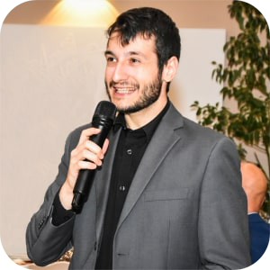

Home

Tommaso Ruga is a Ph.D. Student in Information and Communication Technologies at the Department of Computer Engineering, Modeling, Electronics, and Systems Engineering (DIMES) of the University of Calabria, Italy. He graduated in Computer Engineering in 2023 with a thesis on skin lesion images classification.
The main topic of his current research is to provide AI solutions for public administration, which also includes various public domains such as healthcare, agriculture and cultural heritage. His research is focused not only on providing effective solutions, but also on ensuring that these solutions are explainable — both from the perspective of domain experts and technical specialists. Furthermore, he is committed to studying the fairness and ethical implications of the proposed solutions, with particular attention to the biases present in the datasets currently used to train models.
Contact: tommaso.ruga@dimes.unical.it
Publications
Loading publications...
Academic Courses
2025/2026
Data Analytics for Business — DIMEG Department, University of Calabria
Lecturer: Ester Zumpano. Role: Teaching assistant. Hours: 13.
Fondamenti di Informatica — DIMEG Department, University of Calabria
Lecturer: Ester Zumpano. Role: Teaching assistant. Hours: 12.
Sistemi Informativi e Basi di Dati — DIMEG Department, University of Calabria
Lecturer: Ester Zumpano. Role: Teaching assistant. Hours: 15.
2024/2025
Data Analytics for Business — DIMEG Department, University of Calabria
Lecturer: Ester Zumpano. Role: Teaching assistant. Hours: 13.
Fondamenti di Informatica — DIMEG Department, University of Calabria
Lecturer: Ester Zumpano. Role: Teaching assistant. Hours: 15.
Sistemi Informativi e Basi di Dati — DIMEG Department, University of Calabria
Lecturer: Ester Zumpano. Role: Teaching assistant. Hours: 12.
2023/2024
Fondamenti di Informatica — DIMEG Department, University of Calabria
Lecturer: Ester Zumpano. Role: Tutor. Hours: 20.
Sistemi Informativi e Basi di Dati — DIMEG Department, University of Calabria
Lecturer: Ester Zumpano. Role: Tutor. Hours: 20.